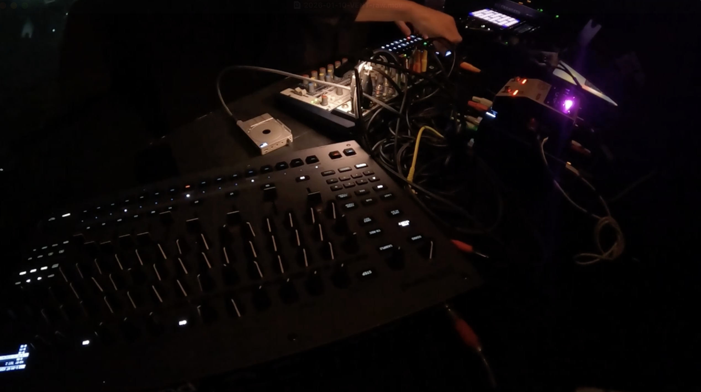
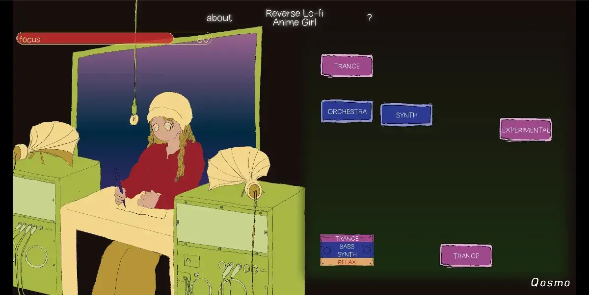
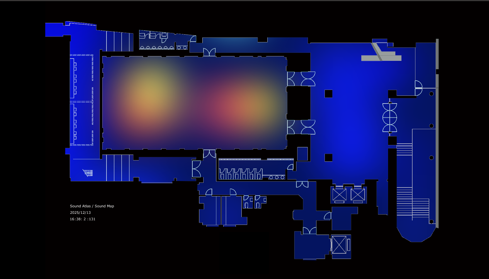
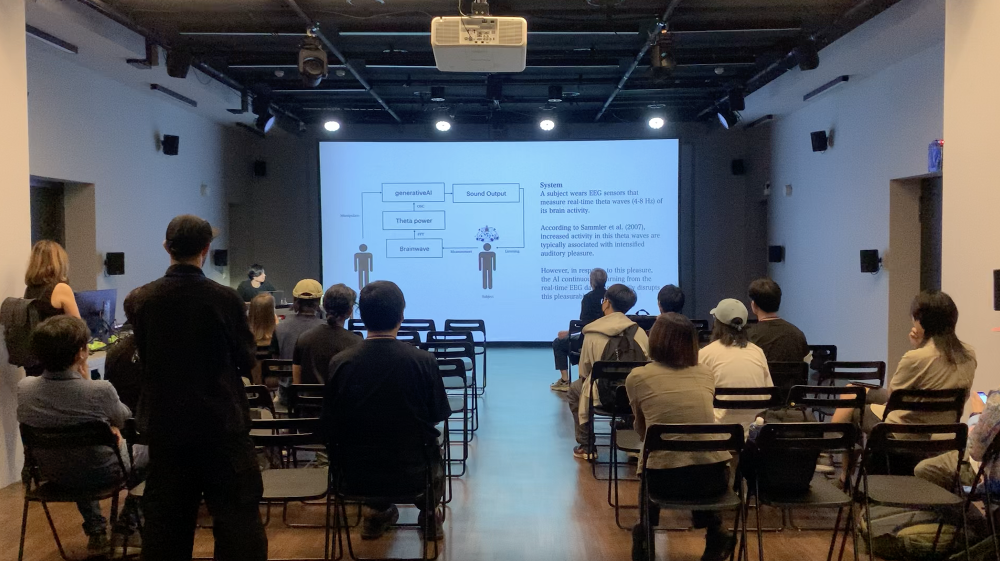
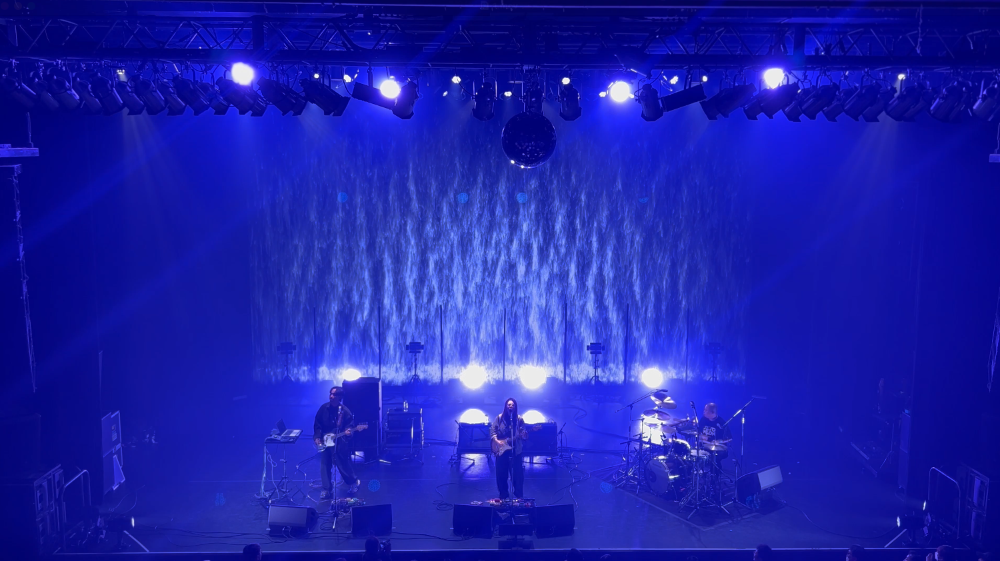
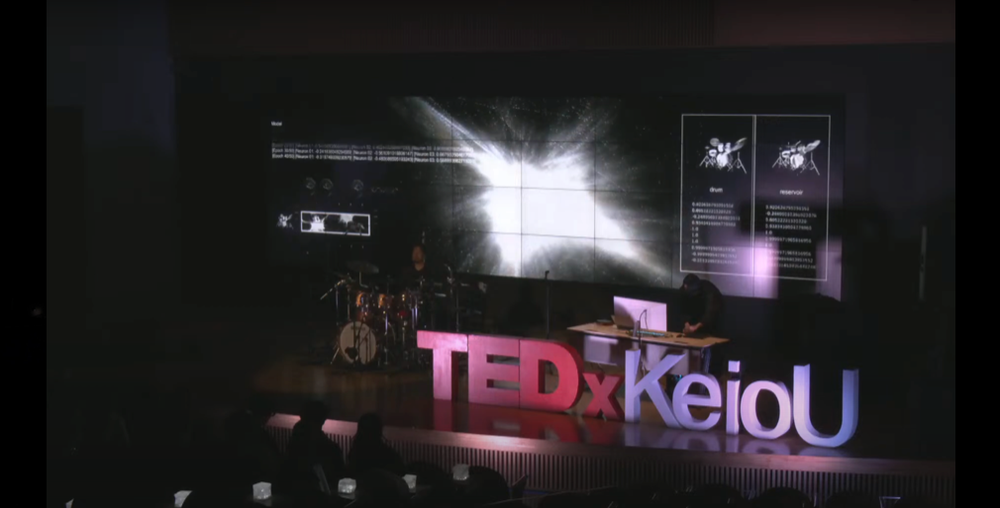

2026.08.04
Audio Buffer Tokyo at FIL
2026.07.11
Vail, A/V performance at Future Frequencies Festival 2026
2026.06.23
Paper published on NIME 2026, Latent Terrain: Adapting Neural Audio Autoencoders as Design Materials in NIME
2026.06.19
liberated frequencies, exhibited at Sónar+D Barcelona 2026
2026.04.11
liberated frequencies, A/V performance at Sónar Istanbul 2026
2026.03.20
liberated frequencies, A/V performance at IRCAM Forum Workshops 2026 Paris / Enghien-les-Bains

2026.01.10
VJ for Nao Tokui at VENT Tokyo

2025.12.23
Sound Design for Reverse Lo-fi Anime Girl, Qosmo
2025.12.21
DJ at Bar Kingyo
2025.12.19
VJ at Beyond 2045 #2 organized by Nao Tokui and Daito Manabe

2025.12.13
Making Sound Map for Sound Atlas #1「極地からの音」at CCBT
2025.11.26
2025.11.19
VJ at Beyond 2045 #1 organized by Nao Tokui and Daito Manabe

2025.11.07
liberated frequencies, demonstrated at IRCAM Forum Workshops 2025 Hors-les-Murs
2025.10.25
Technical support for TECH BIAS 2 - 分類されない「わたし」展, Tokyo University × Sony Group, Creative Futurists Showcase
2025.10.11
Paper published on bioRXiv: A groove brain-music interface for enhancing individual experience of urge to move
2025.07.12
2025.06.16
Audio Visual Performance at Sónar+D 2025 AI Performance Playground, an AI & Music Hacklab powered by S+T+ARTS.
2025.06.02 - Now
Making PR video for Neutone Inc.
2025.06.01
Appear in J-WAVE TOPPAN INNOVATION WORLD ERA【Daito Manabe×Keigo Yoshida】Radio
2025.05.27
Visual Programming and Software Engineering for FUTURE 能-NOH STAGE at Expo 2025 Osaka, Kansai, Japan
2025.05.17
Organaizing A/V, DJ event "Concisousness" at Fil
2025.02.22

2025.02.10
VJ at Radio Sakamoto Uday for SE SO NEON and TOWA TEI
2025.01.24
liberated frequencies A/V performance at Flying Tokyo the final presentation
liberated frequencies installation at Flying Tokyo the final presentation

2024.12.08
Reservoir A/V performance at Tedx KeioU conference
2024.09.04
VJ at Kagurane Tokyo
2024.07.25
2024.06.17
Flying Tokyo 2024
2024.06.13
Relationships between 40-Hz Auditory Steady-State Response and Musical Training at The Neurosciences and Music – VIII 2024 in Helsinki, Finland
2024.05.27
DJ at Zero Tokyo R bar
2024.05.09
DJ at Mei Mei
2024.04.11
Environment and Information studies 2024
2024.01.21
Artificial Heart Brain Waves
2023.12.10
Re:Imagine at ZOU-NO-HANA FUTURE SCAPE PROJECT
2023.11.25
Re:Imagine at Open research forum & 万学博覧会
2023.09.09
Tsukuba International Conference 2023 session performance
2023.09.08
Hanamizuki [Reworked] feat. 一青窈 / Yo Hitoto
2023.08.24
Muscle Synergy of A Lower Limb in Drummers'Dystonia: A Case Study. at ICMPC and APSCOM
2023.05.01
DJ at Zou-No-Hana terrace
2023.04.29
DJ at Spincoaster music bar
2022.05.22
879 of Dazzling Flowers
2021.05.01
円環 - circle of unconsciousness
And more


![Hanamizuki [Reworked] feat. 一青窈 / Yo Hitoto — portfolio thumbnail by Keigo Yoshida](images/keigo-yoshida-Hanamizuki-[Reworked]-feat-一青窈-Yo-Hitoto.png)